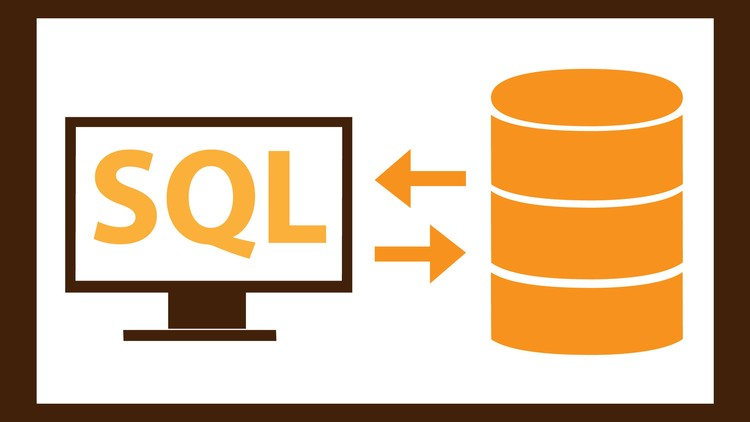

| TYPE | DESCRIPTION | EXAMPLE |
|---|---|---|
| Algorithms/Data Structures | Study of commonly used computational methods and their computational efficiency. | Computational Geometry |
| Artificial Intelligence | Aims to or is required to synthesize goal-orientated processes such as problem-solving, decision-making, environmental adaptation, learning and communication found in humans and animals. |
Robotics |
| Computer Graphics | Computer graphics is the study of digital visual contents, and involves synthesis and manipulation of image data. | Special Effects |
| Computer Security | Computer security is a branch of computer technology, whose objective includes protection of information from unauthorized access, disruption, or modification while maintaining the accessibility and usability of the system for its intended users. |
 Encryption |
| Computer Networks | This branch of computer science aims to manage networks between computers worldwide. |  Internet |
| Databases | Digital databases are managed using database management systems to store, create, maintain, and search data, through database models and query languages. |
 SQL |
| Human-Computer Interaction | Research that develops theories, principles, and guidelines for user interface designers, so they can create satisfactory user experiences with desktop, laptop, and mobile devices. |
 Agile Devlopment |
| Software Engineering | Study of designing, implementing, and modifying software in order to ensure it is of high quality, affordable, maintainable, and fast to build. |
Software Testing |